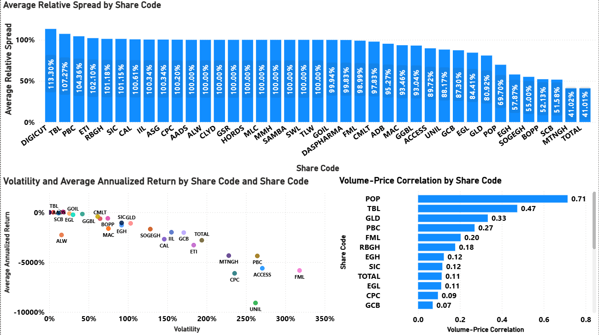
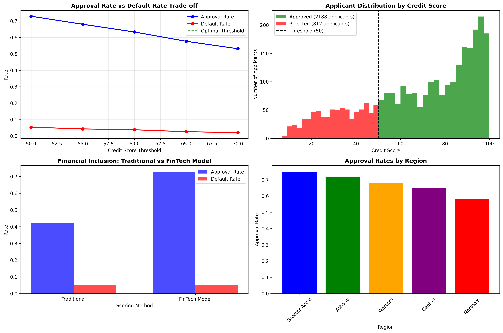
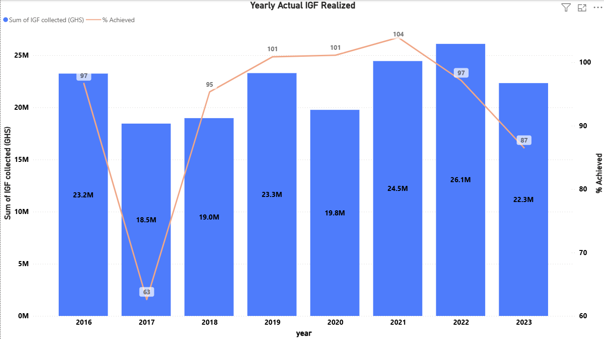
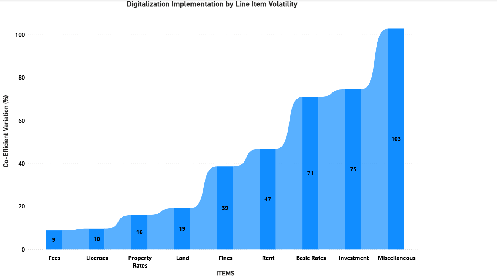
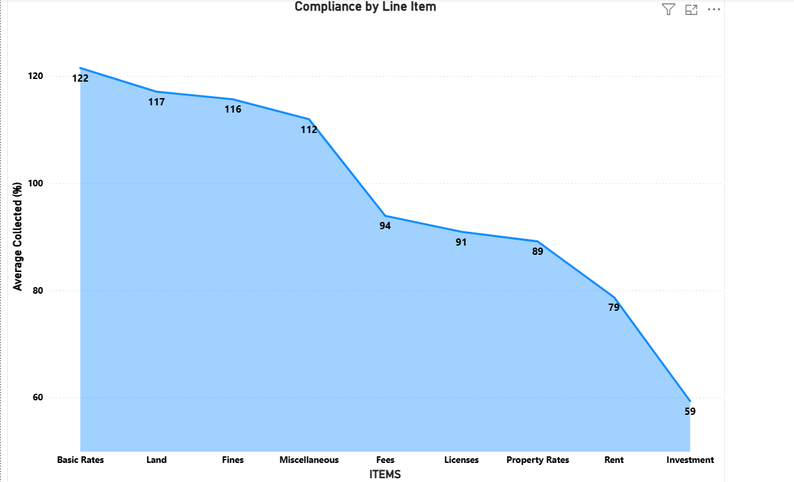

Financial Data Portfolio
A collection of projects spanning public sector fiscal policy, market analytics, and risk modeling.
GSE Market Performance Analysis
Data Analyst
Project Challenge
Analyzing historical trends and liquidity on the Ghana Stock Exchange to provide insights for institutional investors.

Ghana T-Bills Yield Curve Modeling
Financial Analyst
The Objective
Analyzed historical 91-day and 182-day Treasury Bill rates to model volatility and forecast future yield trends in the Ghanaian market.
Technical Depth
- Time Series Analysis: Modeled interest rate fluctuations over a 5-year period.
- Risk Assessment: Calculated the real rate of return against inflation benchmarks.
- Data Tools: Automated data extraction from BoG sources using Python.

FinTech Credit Scoring System
Technical Solution
A machine learning model designed to assess creditworthiness for the unbanked population in Ghana using alternative data points.
- Accuracy: Achieved 85% predictive accuracy using Scikit-Learn.
- Impact: Reduced manual assessment time by 60%.

BookStore Insights Dashboard
Lead Analyst
Project Overview
Optimization of retail inventory through sales trend analysis and customer segmentation.

FinTech Credit Scoring System
Data Analyst
Technical Solution
- Developed alternative credit models for Ghana's informal sector.
- 85% Model Accuracy using Scikit-Learn.
Cost & Efficiency Analysis
Lead Financial Analyst
Impact
Optimized maintenance CapEx through downtime cost modeling.

Digitalizing IGF Mobilization: TMA Case Study
Financial Consultant
Challenge
Transitioning Tema Metropolitan Assembly from manual ledger tracking to a digital fiscal ecosystem to eliminate revenue leakages.
- Volatility Analysis: Analyzed revenue heads to prioritize digital integration.
- CAGR Projections: Forecasted a 10.22% growth in property rate mobilization.


